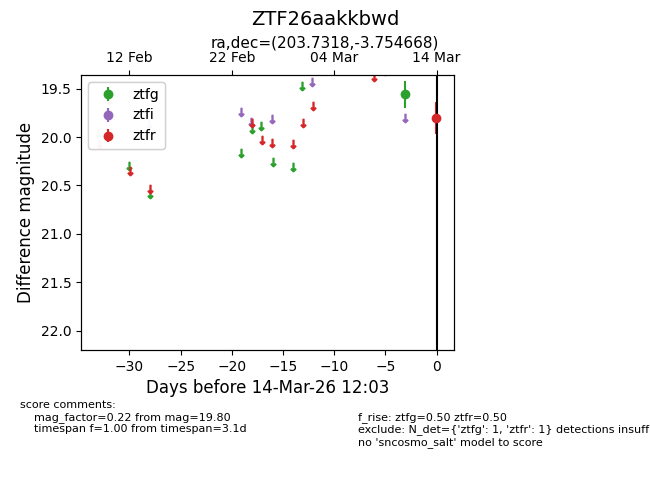
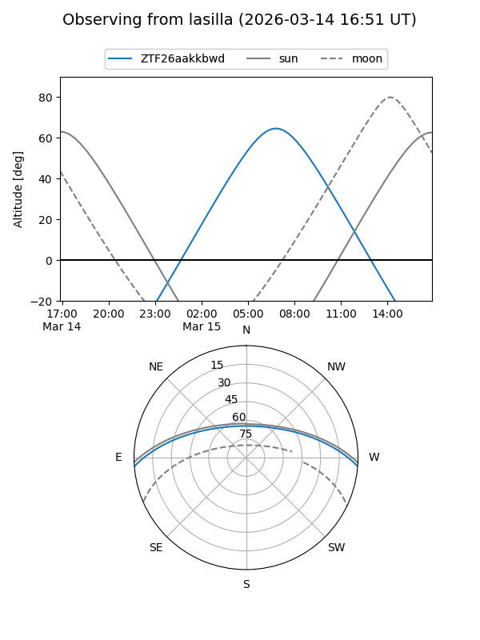
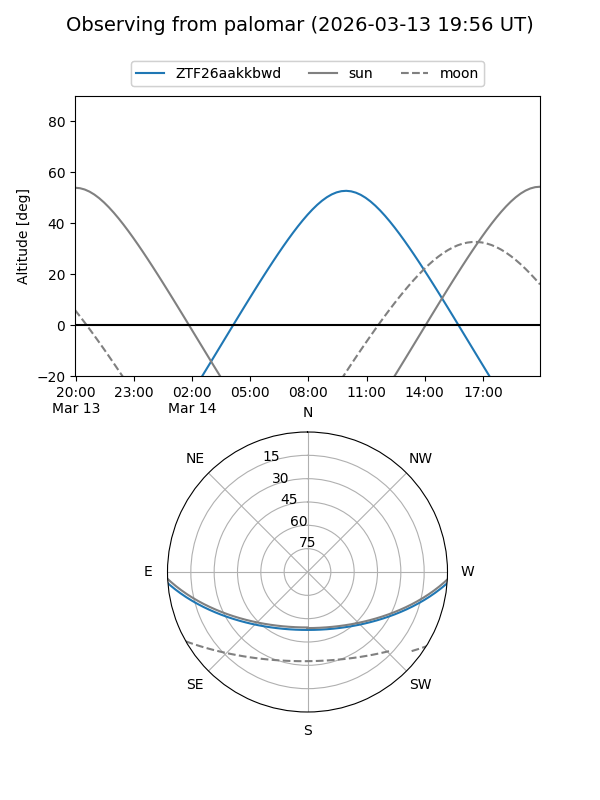

ZTF26aakkbwd
Target ZTF26aakkbwd at 2026-03-14 12:05
Aliases and brokers:
FINK: link
Lasair: link
ALeRCE: link
alt names
ZTF26aakkbwd (ztf,fink_ztf)
Coordinates:
equatorial (ra, dec) = 203.7318,-3.75467
equatorial (HMS+DMS) = 13:34:55.64,-03:45:16.80
galactic (l, b) = (323.3683,+57.38133)
Flags:
Photometry:
last ztfg=19.56, ztfr=19.80
1 ztfg, 1 ztfr detections
Lightcurve

Visibility


Additional plots